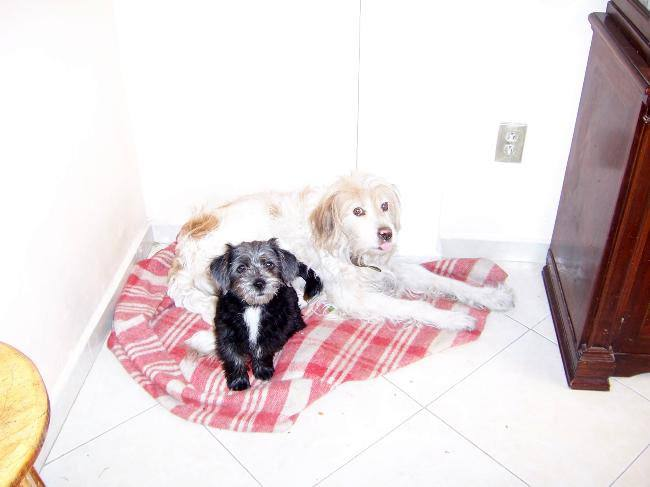
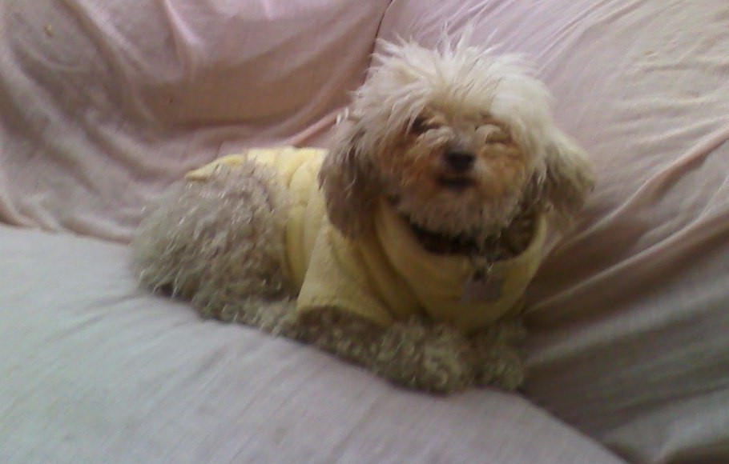
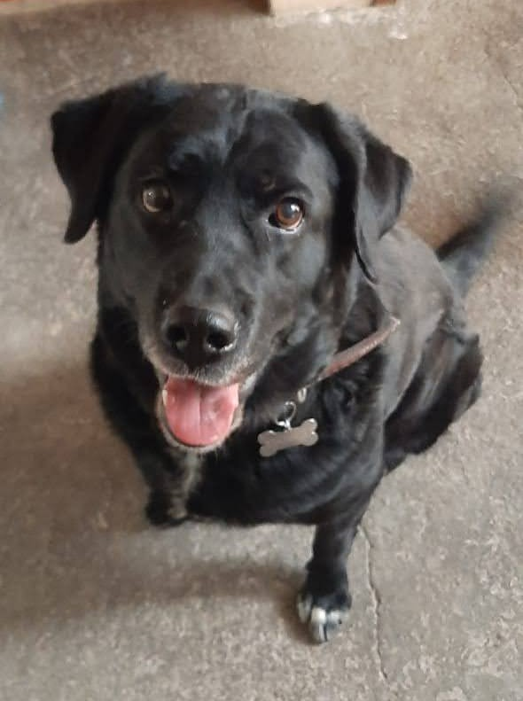
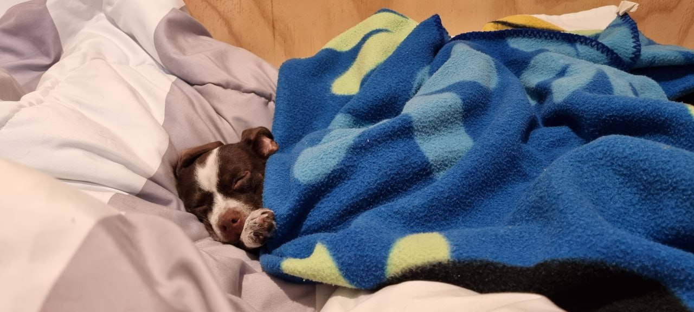
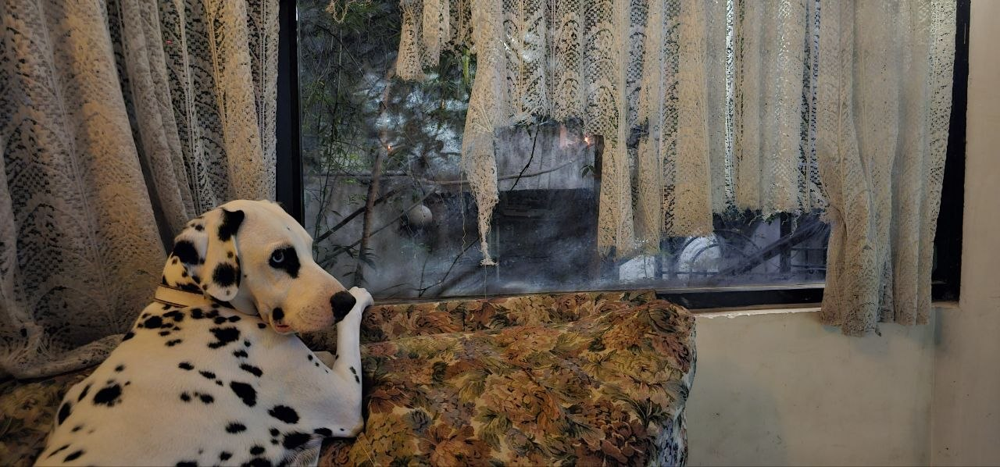

Perritos Hechos Angeles ✟
Esos son las perritas que hemos cuidado y que por el tiempo ya fallecieron.
La primera fue Mostaza, adoptada en 2008. Al parecer nunca supimos que ella es de una raza muy rara, Gigante de los pirineos, la caracteistica de ellos es que tienen los ojos color mostaza, perros muy altos; Vivio 14 años. En la foto aparece Chispita, que es un perro muy chiquito pero vivió 17 años

La segunda fue un perro blanco, la llamamos Pichu. Es el perro con la mayor paciencia para dos niñas chiquitas que crecieron con ella. vivió 14 años.

La última de esta sección el Muffin, ella la encontramos de la calle y al criarla nos dimos cuenta que sufrió mucho, al parecer tenia 3 meses cuando la encontramos. Pero los 17 años restantes se la paso bomba

Tänzerin ♥
Para los cuates se llama Tencha. Mi hermana mayor fue quien de dio el nombre, que es bailarina en Áleman, pero mi Papá la bautizo como tench, y desde se le quedo el nombre. Es de los perros que más quiero en este mucho, hoy tiene 14 años y este perro significa toda mi vida de adolecencia


El perrito más pequeño del mundo, Asami ☺
Asami es un bebé pandemia, nacio en 2021, tiene 4.9 años, es el perro más raro del mundo, se cayo de 7 metros cuando era bebé, asi que ya no tenemos idea si es un chihuahua normal o quedo rarita, es un amor de perro, protector y se deja acariciar solo por las personas que vivimos con ella.

Larin ☻
Larin es un perro que nacio sordo, nos enteramos a las semana de adoptarla, ya que la forma básica de criarlas es por comandos de voz, a los 3 dias de enseñarle modales con señas de mano aprendió todo, ella ha sido un verdadero reto, pero la satisfación de verla convivir y que nunca se ha sentido extraña por su discapacidad me vuelve más fuerte y reciliente. Lo más curioso es que nunca conocerá como se llama. Sin más les presento a el artista y su obra de arte.
